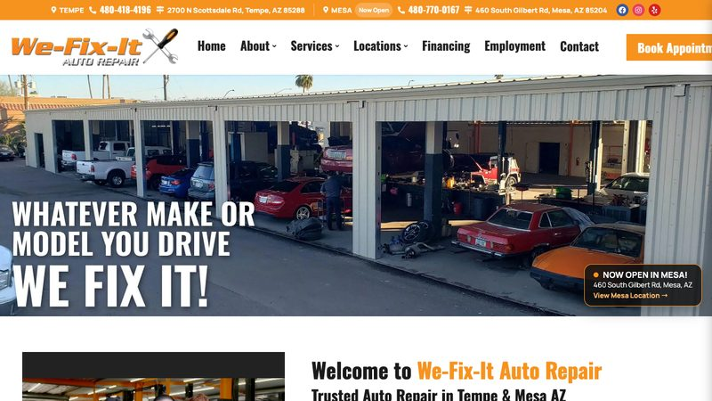
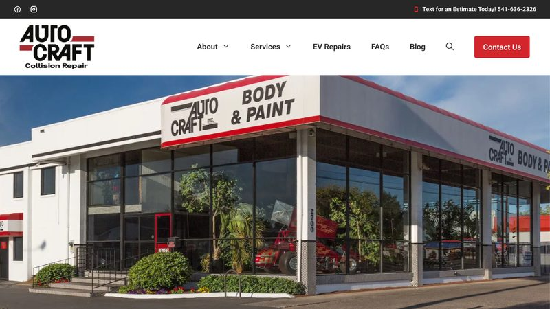

Warranties, certifications and two-location clarity. 3 real, live auto repair websites, reviewed and critiqued. Third-party sites — not our clients.
Honest Accurate Auto
Colorado Springs, CO · https://honestaccurateauto.com · loads in 0.50s

Why it is here: Lists two locations with separate phone numbers and addresses, and a “Book Appointment — East only” button.
What it does well
- The “Honesty. Accuracy. Integrity.” headline speaks directly to mechanic anxiety.
- Two locations are clearly separated in the footer, each with its own phone and address.
- A booking form is built into the site (though only for the East Side).
What could be better
- Booking is only available for the East Side location, which is confusing for West Side visitors.
- No review rating or count is visible in the page HTML.
We Fix It Auto Repair
Tempe, AZ · https://wefixitautorepair.com · loads in 0.25s

Why it is here: Prominently advertises a 3-year/36,000-mile warranty and certified technicians.
What it does well
- The warranty is a strong, concrete trust signal for an independent shop.
- Two locations (Tempe and Mesa) are listed with separate hours in the footer.
- The service list (brakes, diagnostics, diesel, European, fleet, hybrid, transmission) is comprehensive.
What could be better
- No review rating or count appears in the page HTML.
- There is no online booking form — contact is by phone or visit.
Auto Craft
Eugene, OR · https://autocraft-inc.com · loads in 0.40s

Why it is here: Highlights 37+ years in business and a Tesla & Rivian EV body repair specialty.
What it does well
- The EV body repair specialty is a genuine differentiator in a collision market.
- “Family business” and 37+ years of experience build trust.
- The storefront photo and address make it feel like a real local shop.
What could be better
- Only 15 images and no online booking form — the site is functional but thin.
- A cookie-preferences widget clutters the footer on first visit.
Want a auto repair website like these?
Our template pack includes a ready-to-edit auto repair template with tap-to-call, service area, FAQ, contact form and LocalBusiness schema — plus nine other trades.
Get the 10-template pack for $49
Or start with the free guides.
← All examples by trade